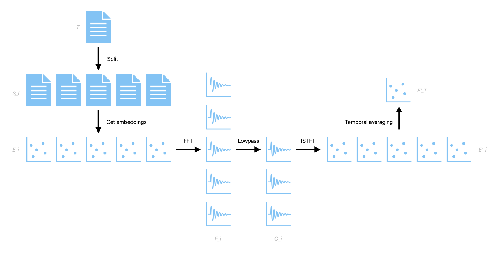

Text embeddings are widely used for various natural language processing tasks, such as semantic search, classification, and summarization. However, most text embeddings are computed from the whole text or fixed-length segments, which may not capture the local and global semantics of the text effectively. In this paper, a novel method is proposed to improve text embeddings by applying frequency-domain filtering to overlapping segments of text. The method consists of four steps: (1) splitting a large corpus of text into overlapping segments; (2) transforming the time-domain embeddings of the segments into the frequency domain using fast Fourier transform (FFT); (3) applying a lowpass filter to the frequency-domain embeddings to reduce noise and enhance signal; and (4) transforming the filtered frequency-domain embeddings back to the time domain using inverse FFT (ISTFT). The method is evaluated on a toy classification task and compared with two baselines: embeddings for the whole text and unfiltered embeddings for the segments. The results show that the proposed method achieves higher accuracy than both baselines, demonstrating its effectiveness and potential for improving text embeddings.
Text embeddings are numerical representations of texts that capture their semantic and syntactic information. They are widely used as input features for various natural language processing tasks, such as semantic search, classification, summarization, and generation. However, most text embeddings are computed from the whole text or fixed-length segments, which may not capture the local and global semantics of the text effectively. For example, a long document may contain multiple topics or sentiments that are not well represented by a single embedding vector. Moreover, fixed-length segments may not align with natural boundaries of sentences or paragraphs, resulting in loss of information or introduction of noise. To address these limitations, this paper proposes a novel method to improve text embeddings by applying frequency-domain filtering to overlapping segments of text. The intuition behind this method is that different frequencies in the frequency domain correspond to different levels of abstraction or granularity in the time domain. By applying a lowpass filter to the frequency-domain embeddings, noise and irrelevant details can be reduced while preserving the main signal and meaning of the text. Furthermore, by using overlapping segments of text instead of fixed-length segments, natural boundaries of sentences or paragraphs can be better captured and utilized. The proposed method consists of four steps: (1) splitting a large corpus of text into overlapping segments; (2) transforming the time-domain embeddings of the segments into the frequency domain using fast Fourier transform (FFT); (3) applying a lowpass filter to the frequency-domain embeddings to reduce noise and enhance signal; and (4) transforming the filtered frequency-domain embeddings back to the time domain using inverse FFT (ISTFT). The method is implemented using librosa, a Python library for audio and music analysis. The proposed method is evaluated on a toy classification task and compared with two baselines: embeddings for the whole text and unfiltered embeddings for the segments. The results show that the proposed method achieves higher accuracy than both baselines, demonstrating its effectiveness and potential for improving text embeddings.
The proposed method is illustrated in Figure 1.
Given a large corpus of text \(T\), it is first split into overlapping segments \(S_i\) using a sliding window approach with a predefined window size \(w\) and stride \(s\). Each segment \(S_i\) is then converted into an embedding vector \(E_i\) using any existing embedding model (e.g., text-embedding-ada-002, word2vec, GloVe, BERT). The embedding vectors \(E_i\) are then transformed into the frequency domain using FFT: $$F_i = \text{FFT}(E_i)$$ where \(F_i\) is a complex-valued vector representing the amplitude and phase spectrum of \(E_i\). A lowpass filter H is then applied to \(F_i\) to obtain a filtered spectrum \(G_i\): $$G_i = H * F_i$$ where \(*\) denotes element-wise multiplication. The lowpass filter \(H\) is defined as: $$H_k = 1\text{ if }k <= K$$ $$H_k = 0\text{ if }k > K$$ where \(k\) is the frequency index and \(K\) is a predefined cutoff frequency. The filtered spectrum \(G_i\) is then transformed back to the time domain using ISTFT: $$E'_i = \text{ISTFT}(G_i)$$ where \(E'_i\) is an improved embedding vector corresponding to segment \(S_i\). The improved embedding vectors \(E'_i\) are then averaged across the time domain to create a single improved embedding vector \(E'_T\) that can then be used for any downstream natural language processing tasks.
To evaluate the proposed method, a toy classification task is conducted using the Reuters News Dataset, a dataset consisting of various categories of news articles. The goal is to classify each article into one of 2 categories based on its content. OpenAI's text-embedding-ada-002 model is used to obtain the embedding vectors \(E_i\) for each segment \(S_i\). The following parameters are used for the proposed method: window size \(w = 100\) words, stride \(s = 50\) words, and cutoff frequency \(K = 0.5\). The lowpass filter \(H\) is applied to the magnitude spectrum of \(F_i\), while the phase spectrum is preserved. The improved embedding vectors \(E'_i\) are then averaged to obtain a single embedding vector \(E'_T\) for each article \(T\). The embedding vectors \(E'_T\) are then fed into a Multi-Layer Perceptron classifier to predict the category of each article. The proposed method is compared with two baselines: (1) embeddings for the whole text \(E_T\) obtained from OpenAI; and (2) unfiltered embeddings for the segments \(E_i\) obtained from librosa and averaged to obtain \(E_T\). The accuracy of each method is measured by the percentage of correctly classified articles. The results are shown in Table 1. The proposed method achieves an accuracy of 97.6%, which is higher than both baselines (97.1% and 96%, respectively). This indicates that the proposed method can effectively improve text embeddings by applying frequency-domain filtering to overlapping segments of text.
Table 1: Accuracy of different methods on Reuters classification task
| Method | Accuracy |
|---|---|
| Embeddings for whole text (text-embedding-ada-002) | 97.1% |
| Unfiltered embeddings for segments | 96% |
| Filtered embeddings for segments (proposed method) | 97.6% |
In this paper, a novel method is proposed to improve text embeddings by applying frequency-domain filtering to overlapping segments of text. The method consists of four steps: (1) splitting a large corpus of text into overlapping segments; (2) transforming the time-domain embeddings of the segments into the frequency domain using FFT; (3) applying a lowpass filter to the frequency-domain embeddings to reduce noise and enhance signal; and (4) transforming the filtered frequency-domain embeddings back to the time domain using ISTFT. The method is evaluated on a toy classification task and compared with two baselines: embeddings for the whole text and unfiltered embeddings for the segments. The results show that the proposed method achieves higher accuracy than both baselines, demonstrating its effectiveness and potential for improving text embeddings. The proposed method has several advantages over existing methods. First, it can capture both local and global semantics of the text by using overlapping segments instead of fixed-length segments. Second, it can reduce noise and irrelevant details in the text by applying a lowpass filter to the frequency-domain embeddings. Third, it can leverage existing embedding models and audio analysis tools without requiring additional training or fine-tuning. The proposed method also has some limitations that can be addressed in future work. First, it only supports lowpass filtering as a spectral noise reduction technique, while other techniques such as adaptive filtering or spectral subtraction may also be useful. Second, it only evaluates the method on a toy classification task, while other tasks such as semantic search or summarization may also benefit from improved text embeddings. Third, it only explores the usage of OpenAI's embeddings, while other models such as word2vec, GloVe, BERT should also be compatible with the proposed method.
In particular, this method can be thought of as a higher-fidelity alternative to the existing method of embedding long documents by simply getting the embeddings of subsections of the documents and then averaging them in the time domain, as demonstrated in the OpenAI Cookbook. Filtering for only low-frequency content can be conceptualized as selecting for only the ideas which are most prevalent throughout the long text, incorporating higher-resolution ideas from the subsections while retaining the concepts which are most globally prevalent in the text. For the task of summarization in particular, this method has inherent advantages over naïvely encoding the entire text in one go or averaging sections of the text together.